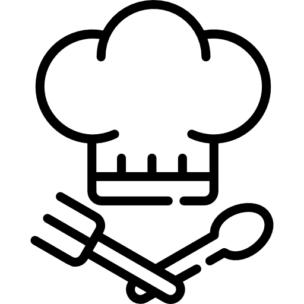
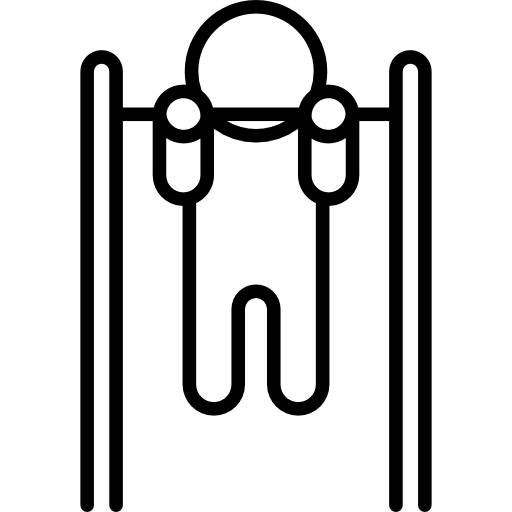

Sobre Mim
Meu nome é Enio Max Pereira dos Reis, tenho 52 anos e sou natural de Recife, Pernambuco. Possuo uma trajetória profissional diversificada, tendo vivido em Londres de 2000 a 2008, onde adquiri experiência em ambientes internacionais e aprimorei meu inglês até o nível fluente.
Atualmente, estou em transição de carreira, cursando Análise e Desenvolvimento de Sistemas (ADS) no Centro Universitário Internacional UNINTER, com o objetivo de me especializar em desenvolvimento web fullstack e tecnologia da informação.
Sou uma pessoa apaixonada por aprendizado contínuo, com forte interesse em tecnologia, desenvolvimento de soluções inovadoras e empreendedorismo.
Meus Hobbies
-

Adoro cozinhar! Trabalhei em cozinhas no Reino Unido e continuo aprimorando minhas habilidades culinárias. - Toco violão como forma de expressão artística e relaxamento.
-
 Jogo xadrez regularmente, apreciando a estratégia e o pensamento lógico.
Jogo xadrez regularmente, apreciando a estratégia e o pensamento lógico.
-

Estou em uma rotina de exercícios para melhorar meu condicionamento físico e bem-estar geral.
Formação
Programação Web
IFRS
Curso completo em Programação Web, abrangendo HTML5, CSS3, JavaScript, Banco de Dados e Sistemas Web.
Python Fundamental I e II
Cisco Netacademy
Formação em Python fundamentals com foco em programação estruturada e boas práticas de desenvolvimento.
Fundamentos de Java
DIO (Digital Innovation One)
Introdução aos fundamentos da linguagem Java, orientação a objetos e desenvolvimento de aplicações.
Inglês Avançado
Experiência Internacional
Fluência em inglês adquirida através de 8 anos de residência em Londres (2000-2008). Nível avançado em conversação, leitura e escrita.
Formação Atual
Análise e Desenvolvimento de Sistemas (ADS) - Centro Universitário Internacional UNINTER
Portfólio
Aqui estão alguns dos projetos que desenvolvi durante meus estudos em programação:
Portal Informativo Propriá-SE
Em DesenvolvimentoPortal web informativo dedicado à cidade de Propriá, Sergipe. Abrange conteúdos sobre turismo, economia, social, esportes, política, curiosidades, história e gastronomia local. Projeto em fase de análise de viabilidade e desenvolvimento de protótipos.
- HTML5
- CSS3
- JavaScript
- Banco de Dados
- Sistemas Web
Sistema de Cadastro de Funcionários
ConcluídoDesenvolvimento de uma aplicação de console para gestão de RH, permitindo o cadastro, consulta e remoção de registros de funcionários. O projeto aplica conceitos de estruturas de dados (listas e dicionários), funções personalizadas e tratamento de exceções para garantir a robustez do sistema.
- Python 3
- Lógica de Programação
- Estruturas de Dados (Listas/Dicionários)
- Tratamento de Exceções (Try/Except)
CoinKeeper (cofrinho)
ConcluídoPrograma em Java que funciona como um cofrinho digital para guardar valores em Real, Dólar e Euro. Permite cadastrar moedas, listar, consultar e converter os valores de forma simples. Utiliza conceitos de orientação a objetos para facilitar a organização e o cálculo automático do câmbio.
- Java
- Lógica de Programação
- Orientação a Objetos
Minhas Redes e Contatos
- LinkedIn: https://www.linkedin.com/in/enio-max-pereira-dos-reis-b16556232/
- Instagram: @eniomaxreis
- GitHub: github.com/EnioMax
- WhatsApp: (81) 99546-9039
- E-mail: eniomax@gmail.com
Mensagem
Deixe a sua mensagem? Preencha o formulário abaixo e entrarei em contato em breve.